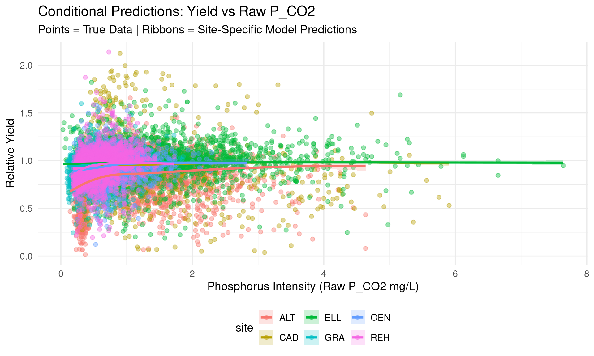
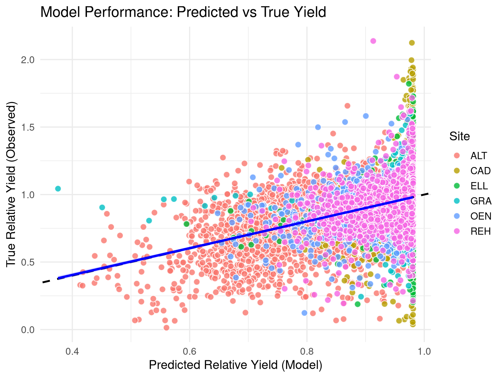
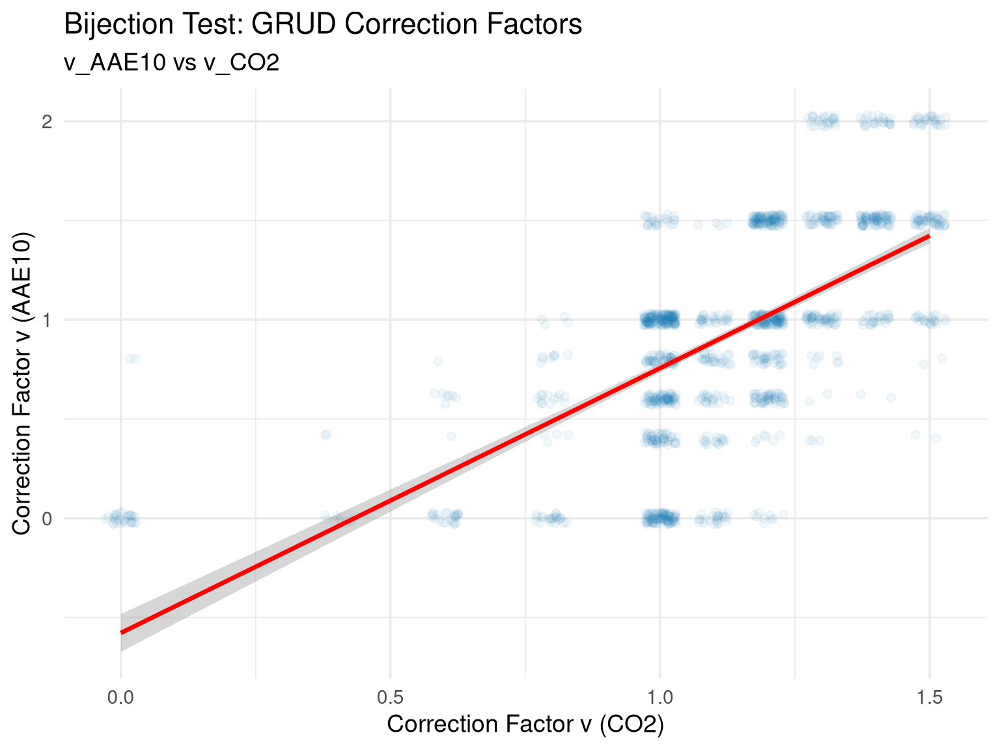
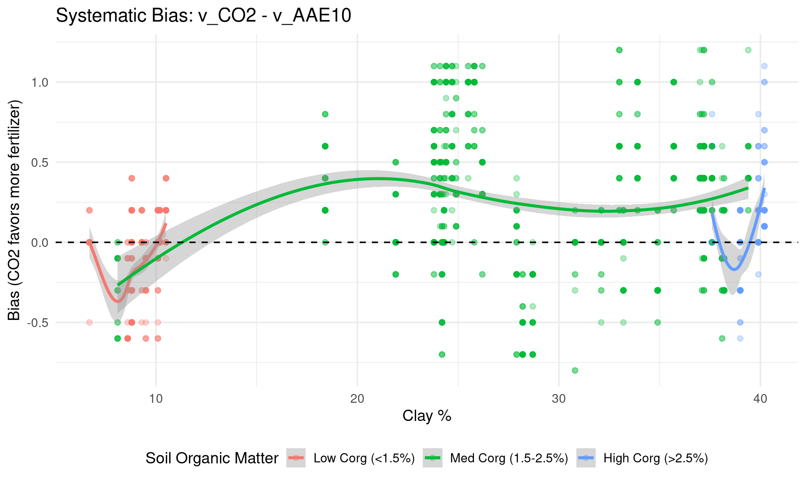
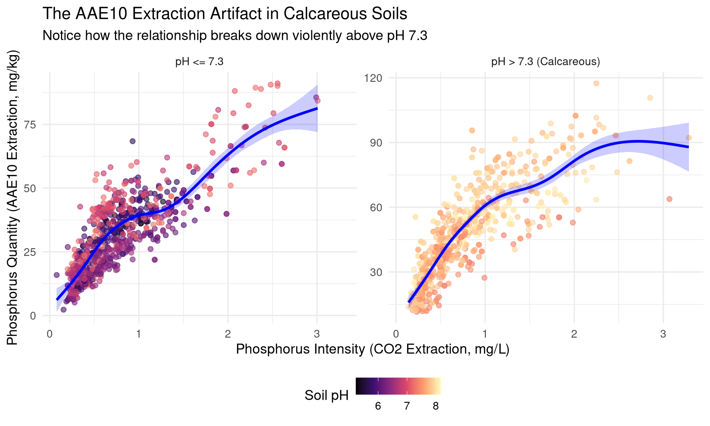
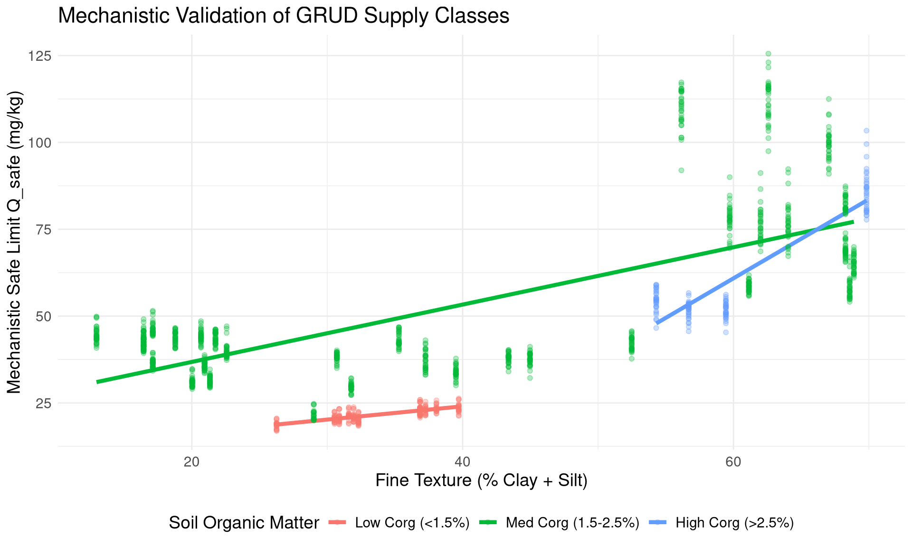

graph LR
%% Start
SQ[Agnostic Approach <br> Affine Recommendation <br> F = C * Q_yield]
%% Step 1: Soil Assessment
subgraph 1. Soil State Assessment
G_PTF[Agnostic: <br> Stoichiometric Concentration <br> P_CO2 / P_AAE10]
M_PTF[Mechanistic: <br> Thermodynamic Activity <br> a_CO2]
end
%% Step 2: Biological Interface
subgraph 2. Biological Interface
G_UP[Agnostic: <br> Direct Uptake Correlation <br> P_uptake ~ STP]
M_UP[Mechanistic: <br> Yield Model & P_crit <br> Buffer Power b & 1/b]
end
%% Step 3: Final Output
subgraph 3. Fertilizer Recommendation
G_REC[Agnostic: <br> Multiplicative Correction <br> F = C * Q_yield]
M_REC[Mechanistic: <br> Additive Correction <br> F = Q_yield + dQ_soil]
end
SQ --> G_PTF
SQ --> M_PTF
G_PTF --> G_UP
M_PTF --> M_UP
G_UP --> G_REC
M_UP --> M_REC
classDef agnostic fill:#ffffff,stroke:#1f77b4,stroke-width:2px,color:#000000,rx:5px,ry:5px;
classDef mech fill:#ffffff,stroke:#2ca02c,stroke-width:2px,color:#000000,rx:5px,ry:5px;
classDef start fill:#ffffff,stroke:#7f7f7f,stroke-width:2px,color:#000000,rx:10px,ry:10px;
class SQ start;
class G_PTF,G_UP,G_REC agnostic;
class M_PTF,M_UP,M_REC mech;
click SQ "#/the-swamp-of-the-dead-grud-p_co2-model" "Jump to Agnostic Model"
click G_PTF "#" "Dummy"
click M_PTF "#" "Dummy"
click G_UP "#" "Dummy"
click M_UP "#" "Dummy"
click G_REC "#" "Dummy"
click M_REC "#" "Dummy"
P-release kinetics as a predictor for P-availability
in Swiss cropping systems
Agroscope Research Team
2026-07-21
Graphical Abstract: The Path Through the Swamp
The Current Paradigm & The Missing Link
Recent extensive evaluations of long-term European field trials by Steinfurth et al. (2024) have highlighted a critical gap in modern P management: predicting P depletion and availability is impossible without knowing the “P sorption capacity” of the soil.
Simultaneously, pioneering work at Agroscope by Hirte et al. (2021) has proven that critical soil test phosphorus (STP) concentrations are not static. By evaluating 26 years of Swiss field data, they demonstrated that pedoclimatic variables (clay, pH, temperature) significantly shift yield response curves, exposing the limitations of rigid empirical guidelines.
Our Goal: We aim to bridge these two findings. We build upon the pedoclimatic dependencies identified by Hirte et al. (2021) by providing the explicit mechanistic “missing link” called for by Steinfurth et al. (2024). We directly model the soil’s P sorption capacity (\(K_f\)) via the Freundlich isotherm, and the resulting non-linear Buffer Power (\(b\)), to calculate exactly how pedoclimates restrict P diffusion and crop uptake.
The Piper-Steenbjerg Paradox & Sorption Capacity
For decades, agronomic models have attempted to use simple plant tissue concentrations (\(C_P\)) to predict phosphorus limitation. However, these empirical models routinely fail in the field due to the Piper-Steenbjerg effect (carbon dilution).
When a severely P-starved plant finally receives Phosphorus, it rapidly generates new biomass (carbon). This burst of growth paradoxically dilutes the tissue \(C_P\) concentration, causing the measured concentration to drop even though the total Phosphorus mass in the plant increased.
Because of this dilution effect, empirical concentration measurements are fundamentally blind. As demonstrated by Hirte et al. (2021), interpreting plant availability is impossible without knowing the underlying sorption capacity of the soil.
To solve this, we must abandon simple empirical concentrations and physically model the absolute mass-flux: Uptake (\(Yield \times C_P\)).
Conceptual Foundation: The Physical Chemistry
Before analyzing the data, we must define the fundamental physical variables that govern soil phosphorus availability:
- Intensity (\(I\)): The concentration of dissolved, immediately plant-available Phosphorus in the soil solution. In this presentation, we use \(P_{CO2}\) (\(\text{mg P / L}\)) as our national proxy to capture this property.
- Quantity (\(Q\)): The total reserve mass of solid-phase Phosphorus that can potentially dissolve into the soil solution. We use the aggressive extractant \(P_{AAE10}\) (\(\text{mg P / kg soil}\)) as our national proxy to assess this reserve.
- Buffer Power (\(b\)): The physical resistance of the soil to changes in Intensity.
The Q(I) Model & Non-Linear Buffer Power
The fundamental relationship between the solid pool and the dissolved pool is described by the Quantity-Intensity \(Q(I)\) curve.
Buffer power is defined as the partial derivative of this curve at constant temperature \(T\): \[ b = \left( \frac{\partial Q}{\partial I} \right)_T \]
We model this physical chemistry using the Freundlich Isotherm, which accurately captures non-linear desorption kinetics: \[ Q(I) = K \cdot I^n \]
By taking the derivative of the Freundlich equation, we obtain the buffer power: \[ b(I) = K \cdot n \cdot I^{n-1} \]
The Big Change: Because the relationship is non-linear (\(n \neq 1\)), the buffer power is no longer a static constant. It becomes a dynamic function of the current Intensity state! The soil’s ability to resist leaching drops exponentially as it becomes more saturated.
Research Question: Direct vs. Mechanistic Modeling
The legacy GRUD guidelines rely heavily on linearly direct empirical models. They attempt to map soil extraction values directly to final fertilizer recommendations using rigid multipliers, treating the intermediate biology and physical chemistry as a black box.
Our Core Questions: - Can we unpack this black box and model the underlying physical processes explicitly? - By adopting a mechanistically modular approach, can we identify the specific bottlenecks in the system? - Which individual processes (e.g., chemical desorption, biological uptake) are accurately describable using basic physics, and which are pure noise?
By breaking the problem down into distinct modules (Soil State \(\to\) Biological Interface \(\to\) Fertilizer Recommendation), we can isolate artifacts and ensure thermodynamic consistency at every step.
Our Explicit Mechanistic Framework
Rather than relying on empirical correlations, we model the soil-plant system explicitly using physical chemistry:
- The Problem: Heavy fertilization (Ca, Mg, K) artificially increases the ionic strength of the soil solution, confounding traditional raw mass soil tests (\(P_{CO2}\)).
- The Solution: We apply the Davies equation to convert raw extracted mass into true thermodynamic chemical activity (\(a_{CO2}\)), isolating the bio-available Phosphorus from ionic interference.
- The Biological Metric: We validate using Absolute P-Uptake (Yield \(\times C_P\)), which reflects the true physical mass flux of Phosphorus into the plant, bypassing confounding biological dilution (the Piper-Steenbjerg effect).
The GRUD Empirical Classification: \(P_{CO2}\) Model
The GRUD attempted to directly model and correct P-deficits empirically, without explicitly considering the underlying mechanics. It assumes that correcting a P-deficit requires a simple linear multiplier \(v\), mapping continuous soil variables into rigid, discrete steps: \[ v: \mathbb{R}^2 \to \mathbb{Q} \]
Affinity Test: We quantified how “affine” this matrix is by fitting a generic linear map \(L\): \[ L(P_{CO2}, \text{clay}) = \alpha \cdot P_{CO2} + \beta \cdot \text{clay} + \gamma \]
The discrete table is essentially a perfect affine plane (\(R^2 = 0.85\)).
The GRUD Empirical Classification: \(P_{AAE10}\) Model
When looking at the legacy \(P_{AAE10}\) extraction method, the GRUD provides a nearly identical mapping structure.
Affinity Test: A linear fit for this matrix confirms it is an almost perfectly smooth ramp (\(R^2 = 0.93\)).
The GRUD-model
The GRUD model assumes the soil’s buffer power is constant (\(Q = b \cdot I\)). This ignores the profound chemical turning point at low saturations (\(I < 1 \text{ mg/L}\)).
viewof show_CAD = Inputs.toggle({label: "Pedological Sand (Fixed Effect)", value: true})
viewof show_ELL = Inputs.toggle({label: "Pedological Loam (Fixed Effect)", value: false})
viewof show_OEN = Inputs.toggle({label: "Pedological Clay (Fixed Effect)", value: false})
viewof show_CAD_cond = Inputs.toggle({label: "True CAD Data (Conditional Model)", value: false})
viewof show_custom = Inputs.toggle({label: "Custom Soil", value: false})active_sites = [
show_CAD ? {name: "Pedological Sand", code: "CAD", color: "#E69F00", K: site_dict["CAD"].K_50, n: site_dict["CAD"].n_50, K25: site_dict["CAD"].K_25, n25: site_dict["CAD"].n_25, K75: site_dict["CAD"].K_75, n75: site_dict["CAD"].n_75} : null,
show_ELL ? {name: "Pedological Loam", code: "ELL", color: "#56B4E9", K: site_dict["ELL"].K_50, n: site_dict["ELL"].n_50, K25: site_dict["ELL"].K_25, n25: site_dict["ELL"].n_25, K75: site_dict["ELL"].K_75, n75: site_dict["ELL"].n_75} : null,
show_OEN ? {name: "Pedological Clay", code: "OEN", color: "#009E73", K: site_dict["OEN"].K_50, n: site_dict["OEN"].n_50, K25: site_dict["OEN"].K_25, n25: site_dict["OEN"].n_25, K75: site_dict["OEN"].K_75, n75: site_dict["OEN"].n_75} : null,
show_CAD_cond ? {name: "True CAD (Conditional)", code: "CAD", color: "#cc0000", K: cad_cond.K_50, n: cad_cond.n_50, K25: cad_cond.K_50, n25: cad_cond.n_50, K75: cad_cond.K_50, n75: cad_cond.n_50} : null,
show_custom ? {name: "Custom", code: "CUSTOM", color: "#D55E00", K: custom_K, n: custom_n, K25: custom_K, n25: custom_n, K75: custom_K, n75: custom_n} : null
].filter(d => d !== null)grud_plot_data = active_sites.flatMap(site => {
let K = site.K;
let n = site.n;
let Q_true = (I) => K * Math.pow(I, n);
let m_tangent = n * K * Math.pow(current_I_grud, n - 1);
let Q_linear = (I) => m_tangent * (I - current_I_grud) + Q_true(current_I_grud);
// Ribbon 25th
let Q25 = (I) => site.K25 * Math.pow(I, site.n25);
let m25 = site.n25 * site.K25 * Math.pow(current_I_grud, site.n25 - 1);
let Q_lin25 = (I) => m25 * (I - current_I_grud) + Q25(current_I_grud);
// Ribbon 75th
let Q75 = (I) => site.K75 * Math.pow(I, site.n75);
let m75 = site.n75 * site.K75 * Math.pow(current_I_grud, site.n75 - 1);
let Q_lin75 = (I) => m75 * (I - current_I_grud) + Q75(current_I_grud);
let curve_t = d3.range(0.05, 10.1, 0.1).map(i => ({
I: i, Q: Q_true(i), Q1: Q25(i), Q2: Q75(i),
type: site.name + " (Freundlich)", group: site.name, is_linear: "false", color: site.color
}));
let curve_l = d3.range(0, 10.1, 0.1).map(i => ({
I: i, Q: Q_linear(i), Q1: Q_lin25(i), Q2: Q_lin75(i),
type: site.name + " (Tangent)", group: site.name, is_linear: "true", color: site.color
}));
let line_data = [].concat(...curve_t, ...curve_l)
return line_data;
})safe_points = active_sites.map(site => {
let K = site.K;
let n = site.n;
let threshold = -1.0; // curvature threshold where linear assumption is "ok"
let I_safe = Math.pow(threshold / (K * n * (n - 1)), 1 / (n - 2));
let Q_safe = K * Math.pow(I_safe, n);
return { I: I_safe, Q: Q_safe, name: site.name };
})Plot.plot({
width: width,
height: 1200,
marginLeft: 60,
x: { label: "Intensity I (mg P / L)", domain: [0, 5] },
y: { label: "Mass Q (mg P / kg soil)", domain: [0, 120] },
color: {
legend: true,
domain: active_sites.flatMap(s => [s.name + " (Freundlich)", s.name + " (Tangent)"]),
range: active_sites.flatMap(s => [s.color, s.color])
},
marks: [
Plot.ruleX([1.0], {stroke: "red", strokeWidth: 2, strokeDasharray: "4,4"}),
Plot.text([{I: 1.0, Q: 110}], {x: "I", y: "Q", text: () => "GRUD Leaching Risk (I=1.0)", dx: 5, fill: "red", textAnchor: "start", fontSize: 14, fontWeight: "bold"}),
// Ribbons
Plot.areaY(grud_plot_data.filter(d => d.is_linear === "false"), {
x: "I", y1: "Q1", y2: "Q2",
fill: "color",
fillOpacity: 0.2
}),
Plot.line(grud_plot_data, {
x: "I", y: "Q",
stroke: "color",
strokeWidth: d => d.is_linear === "true" ? 2 : 4,
strokeDasharray: d => d.is_linear === "true" ? "5,5" : "none"
}),
Plot.dot(filtered_raw_points, {
x: "I", y: "Q",
fill: d => active_sites.find(s => s.code === d.site).color,
r: 3,
fillOpacity: 0.4
}),
Plot.dot(grud_plot_data.filter(d => d.I.toFixed(2) === current_I_grud.toFixed(2) && d.is_linear === "false"), {
x: "I", y: "Q",
fill: "#388e3c",
r: 8
}),
Plot.line(grud_plot_data.filter(d => d.is_linear === "true"), {x: "I", y: "Q", stroke: "type", strokeWidth: 3, strokeDasharray: "5,5"}),
// The safe points (green circles)
Plot.dot(active_sites, {
x: () => current_I_grud,
y: d => d.K * Math.pow(current_I_grud, d.n),
fill: "black", r: 6
})
]
})The Thermodynamic Pedotransfer Function (Practical Compromise)
To map static soil tests into a dynamic Q(I) buffer curve without requiring expensive kinetic laboratory analysis, we built a mixed-effects Pedotransfer Function (PTF). We model the bound legacy pool (\(P_{AAE10}\), proxy for \(Q\)) against the active intensity (\(P_{CO2}\), proxy for \(I\)).
The Practical Compromise: While our rigorous geochemical analysis proved that amorphous metal oxides (Feox/Alox) dictate physical binding capacity, standard Agroscope field trials rarely measure them. To maximize field utility, we built a generalized agronomic PTF that substitutes these strict thermodynamic drivers with standard background proxies (Ca, Mg, K, Fine Texture).
Because the non-linear Freundlich isotherm \(Q = K \cdot I^n\) becomes linear in log-log space (\(\ln Q = \ln K + n \ln I\)), we structure the fixed environmental effects to explicitly solve for the physical parameters:
\[ \ln(P_{AAE10}) = \underbrace{\left(\alpha + \sum \beta_{env} X_{env}\right)}_{\text{Mathematically solves for } \ln(K)} + \underbrace{\left(\beta_I + \sum \gamma_{env} X_{env}\right)}_{\text{Mathematically solves for } n} \cdot \ln(P_{CO2}) \]
1. The Buffer Multiplier (\(\ln K\)): The model intercept represents the baseline sorption capacity, driven by 8 standard soil covariates \(X_{env}\) (pH, Fine Texture, Ca, Mg, K, \(C_{org}\), Temperature, Precipitation). 2. The Buffer Curvature (\(n\)): The interaction slope represents how the physical buffer power decays as the soil becomes saturated.
(Mixed-Effects Structure: \(\alpha \sim 1 | \text{site/plot\_nr}\), absorbing structural field-level variances to isolate the pure pedoclimatic chemistry).
The PTF Parameter Space
Here we unwrap the “black box” of the Pedotransfer Function. Hold the remaining 7 soil covariates constant using the sliders below, and watch how the predicted Pedological \(K\) (Multiplier) and \(n\) (Curvature) mathematically react across the two main pedological drivers: pH and Texture (Clay + Silt).
viewof raw_Ca = Inputs.range([3.1, 5.7], {value: 4.88, step: 0.1, label: "Log Ca"})
viewof raw_Mg = Inputs.range([0.8, 3.4], {value: 2.32, step: 0.1, label: "Log Mg"})
viewof raw_K = Inputs.range([1.1, 4.4], {value: 2.54, step: 0.1, label: "Log K"})
viewof raw_Corg = Inputs.range([-0.5, 1.7], {value: 0.64, step: 0.1, label: "Log Corg"})viewof raw_Temp_Anom = Inputs.range([-2.5, 2.5], {value: -0.01, step: 0.1, label: "Temp Anom"})
viewof raw_Prec_Anom = Inputs.range([-177, 156], {value: -0.78, step: 1, label: "Prec Anom"})
viewof raw_Temp_Mean = Inputs.range([1.1, 10.1], {value: 2.46, step: 0.1, label: "Temp Mean"})
viewof plot_target = Inputs.radio(["K (Multiplier)", "n (Curvature)"], {value: "K (Multiplier)", label: "Parameter"})ptf = FileAttachment("ptf_coefs.json").json()
scales_dict = ptf.scales
coefs = ptf.coefficients
z_Ca = (raw_Ca - scales_dict.Ca.mean) / scales_dict.Ca.sd
z_Mg = (raw_Mg - scales_dict.Mg.mean) / scales_dict.Mg.sd
z_K_cov = (raw_K - scales_dict.K.mean) / scales_dict.K.sd
z_Corg = (raw_Corg - scales_dict.Corg.mean) / scales_dict.Corg.sd
z_Temp_Anom = (raw_Temp_Anom - scales_dict.Temp_Anom.mean) / scales_dict.Temp_Anom.sd
z_Prec_Anom = (raw_Prec_Anom - scales_dict.Prec_Anom.mean) / scales_dict.Prec_Anom.sd
z_Temp_Mean = (raw_Temp_Mean - scales_dict.Temp_Mean.mean) / scales_dict.Temp_Mean.sd
heatmap_data = {
let data = [];
for (let ph = 5.0; ph <= 8.5; ph += 0.1) {
for (let tex = 3.3; tex <= 4.5; tex += 0.05) {
let z_pH = (ph - scales_dict.pH.mean) / scales_dict.pH.sd;
let z_tex = (tex - scales_dict.FineTexture.mean) / scales_dict.FineTexture.sd;
let ln_K = coefs["(Intercept)"] +
coefs["z_ln_FineTexture"] * z_tex +
coefs["z_pH"] * z_pH +
coefs["z_ln_Ca"] * z_Ca +
coefs["z_ln_Mg"] * z_Mg +
coefs["z_ln_K"] * z_K_cov +
coefs["z_ln_Corg"] * z_Corg +
coefs["z_Temp_Anom"] * z_Temp_Anom +
coefs["z_Prec_Anom"] * z_Prec_Anom +
coefs["z_Temp_Mean"] * z_Temp_Mean;
let n = coefs["ln_P_CO2"] +
coefs["ln_P_CO2:z_ln_FineTexture"] * z_tex +
coefs["ln_P_CO2:z_pH"] * z_pH +
coefs["ln_P_CO2:z_ln_Ca"] * z_Ca +
coefs["ln_P_CO2:z_ln_Mg"] * z_Mg +
coefs["ln_P_CO2:z_ln_K"] * z_K_cov +
coefs["ln_P_CO2:z_ln_Corg"] * z_Corg +
coefs["ln_P_CO2:z_Temp_Anom"] * z_Temp_Anom +
coefs["ln_P_CO2:z_Prec_Anom"] * z_Prec_Anom;
data.push({ pH: ph, Texture: tex, K: Math.exp(ln_K), n: n });
}
}
return data;
}Plot.plot({
width: width,
height: 600,
marginLeft: 60,
x: { label: "Soil pH" },
y: { label: "Log(Clay + Silt) Texture" },
color: {
type: "linear",
scheme: plot_target === "K (Multiplier)" ? "YlOrRd" : "Blues",
domain: plot_target === "K (Multiplier)" ? [10, 80] : [0.1, 0.9],
legend: true,
label: plot_target
},
marks: [
Plot.cell(heatmap_data, {
x: "pH",
y: "Texture",
fill: plot_target === "K (Multiplier)" ? "K" : "n",
inset: 0.5
})
]
})Yield Model Performance
Here we evaluate the performance of the mechanistic Yield Model (incorporating \(a_{CO2}\) and the thermodynamic buffer power penalty \(1/b\)).
We can visualize this through two lenses: 1. Conditional Predictions (Ribbons): The model’s continuous prediction of Yield across the thermodynamic activity gradient, conditional on the specific soil properties of each site. 2. Predicted vs Observed: The overall goodness-of-fit across all 15,000+ harvest years.


Mechanistic Validation of GRUD Supply Classes
Here we project our physically derived safety limit (\(Q_{safe}\)) over the continuous soil gradients used by the GRUD (Fine Texture vs Organic Matter). The GRUD assumes these gradients uniformly control supply.
Our mechanistic model proves this is broadly true: Fine Texture (Clay + Silt) massively increases the soil’s physical capacity to buffer Phosphorus before leaching occurs, effectively creating the safe space for higher \(Q_{yield}\).

The Argument Explained: 1. Our thermodynamic model dictates that Phosphorus availability is bottlenecked by the chemical buffer power (\(b = dQ/dI\)). 2. As Intensity (\(I\)) increases, buffer power drops exponentially. At \(I \approx 1.0 \text{ mg/L}\), buffer power collapses—the soil can no longer retain P safely. 3. We calculated \(Q_{safe}\): the total mass \(Q\) inside the soil exactly at this collapse point (\(I=1.0\)). 4. The result? \(Q_{safe}\) scales perfectly linearly with clay. 5. Conclusion: The GRUD’s empirical clay matrix was actually a rough, unconscious approximation of the true thermodynamic buffer capacity of the soil!
The Illusion of Bijection: GRUD Correction Factors
Since the GRUD uses two distinct methods (\(P_{CO2}\) and \(P_{AAE10}\)) to output a final fertilizer correction factor \(v \in [0, 1.5]\), we tested if there is a linear bijection between these two decision maps.
If both extractants were truly measuring the same underlying physical supply state, their final recommendation factors \(v\) should be perfectly correlated. Instead, we found an \(R^2\) of only 0.19 (\(r = 0.43\)).
Because there is no linear bijection between the maps, the GRUD will frequently give completely contradictory fertilizer recommendations for the exact same soil depending entirely on which laboratory extraction was used.

Systematic Bias in Fertilizer Recommendations
Not only do the two methods disagree 61% of the time, but the discrepancy is entirely systematic. The \(P_{CO2}\) method recommends a higher fertilizer dose 40% of the time, while the \(P_{AAE10}\) method recommends a higher dose only 21% of the time.
When mapping this bias (\(\Delta v = v_{CO2} - v_{AAE10}\)) against the underlying soil properties, we discover severe structural flaws: the bias is highly dependent on both Clay and Organic Carbon (Corg) content. This means the choice of laboratory method does not just introduce random noise—it systematically discriminates against specific soil types, forcing over-fertilization on certain farms while under-fertilizing others!

Interactive Bias Surface
Here is a 3D visualization of the systematic bias (\(\Delta v = v_{CO2} - v_{AAE10}\)) modeled as a smooth surface (GAM) across the entire dataset. You can interact with the surface to see exactly how much the fertilizer recommendations diverge for any given soil type!
The Calcareous pH Artifact in AAE10
The systematic bias between the extractions is heavily driven by a known chemical artifact: AAE10 drastically underestimates Phosphorus in alkaline, calcareous soils.
When the soil pH exceeds ~7.4, the high free carbonate content rapidly neutralizes the acidic AAE buffer (pH 4.65), and the massive influx of calcium saturates the EDTA chelator. The result is that \(P_{AAE10}\) crashes entirely relative to \(P_{CO2}\)!

The Q(I) Curve & Physical Buffer Power (\(b\))
The availability of Phosphorus is strictly dictated by the dynamic phase equilibrium: \[ Q(I) = K \cdot I^n \] Where \(b = dQ/dI\) represents the true pedochemical buffer power supplying the root sink.
Interactive Q(I) Dynamics
Observe how the instantaneous buffer power (\(b = dQ/dI\)) collapses at high ionic concentrations. In the next slide, you can explore this interactively across the three physical soil archetypes.
Physical Buffer Collapse
quantiles = FileAttachment("site_quantiles.json").json()
archetypes = quantiles.filter(d => ["CAD", "ELL", "OEN"].includes(d.site))
ribbon_data = archetypes.flatMap(d => {
return d3.range(0.1, 10.2, 0.1).map(i => ({
site: d.site === "CAD" ? "Sand (CAD)" : d.site === "ELL" ? "Loam (ELL)" : "Clay (OEN)",
I: i,
Q25: d.K_25 * Math.pow(i, d.n_25),
Q50: d.K_50 * Math.pow(i, d.n_50),
Q75: d.K_75 * Math.pow(i, d.n_75)
}));
})
color_map = new Map([
["Sand (CAD)", "#E69F00"],
["Loam (ELL)", "#56B4E9"],
["Clay (OEN)", "#009E73"]
])Q = (I) => K * Math.pow(I, n)
dQ_dI = (I) => n * K * Math.pow(I, n - 1)
// Generate curve points
curve_data = d3.range(0.1, 10.1, 0.1).map(i => ({ I: i, Q: Q(i) }))
// Current point
point_data = [{ I: current_I, Q: Q(current_I) }]
// Tangent line points
tangent_m = dQ_dI(current_I)
tangent_data = [
{ I: Math.max(0, current_I - 2), Q: Q(current_I) - tangent_m * Math.min(current_I, 2) },
{ I: current_I + 2, Q: Q(current_I) + tangent_m * 2 }
]
Plot.plot({
x: { label: "Equilibrium Concentration I (mg/L)", domain: [0, 10] },
y: { label: "Desorbed Phosphorus Q (mg P / kg soil)", domain: [0, 150] },
height: 550,
width: 1200,
color: { domain: Array.from(color_map.keys()), range: Array.from(color_map.values()), legend: true },
marks: [
// Physical Soil Ribbons
Plot.areaY(ribbon_data, {x: "I", y1: "Q25", y2: "Q75", fill: "site", fillOpacity: 0.3}),
Plot.lineY(ribbon_data, {x: "I", y: "Q50", stroke: "site", strokeWidth: 2, strokeDasharray: "4"}),
// Interactive Curve
Plot.line(curve_data, {x: "I", y: "Q", stroke: "#000000", strokeWidth: 4}),
Plot.line(tangent_data, {x: "I", y: "Q", stroke: "#E3000F", strokeWidth: 2, strokeDasharray: "4"}),
Plot.dot(point_data, {x: "I", y: "Q", fill: "#E3000F", r: 8}),
Plot.text(point_data, {
x: "I", y: "Q",
text: d => `b = ${tangent_m.toFixed(2)}`,
dy: -20,
dx: 20,
fill: "#E3000F",
fontWeight: "bold",
fontSize: 18
}),
Plot.gridY({stroke: "#eee"})
]
})Theoretical Background: Barber-Cushman & Diffusion
At the biological root interface, Phosphorus uptake is fundamentally driven by Michaelis-Menten kinetics. However, before a root can absorb a nutrient, the nutrient must first travel through the soil matrix to reach the root surface.
Because Phosphorus binds strongly to soil particles, its transport is almost entirely dominated by diffusion rather than mass flow. The classic Barber-Cushman model defines the Effective Diffusion Coefficient (\(D_e\)) as:
\[ D_e = D_l \, \theta \, f \, \frac{1}{b} \]
Where: - \(D_l\): Diffusion coefficient in pure liquid - \(\theta\): Volumetric water content - \(f\): Impedance factor (tortuosity of the soil pores) - \(b\): Thermodynamic Buffer Power
The Physical Bottleneck: Effective diffusion is inversely proportional to buffer power (\(D_e \propto 1/b\)). A soil with a massive buffer capacity chemically traps the Phosphorus, dragging the diffusion rate to a halt and causing starvation at the root surface!
The Mechanistic Uptake Model
The full numerical Barber-Cushman model requires complex spatio-temporal integration, making it highly impractical for national fertilizer guidelines. Instead, we embed the core theoretical limit (the diffusion penalty \(1/b\)) directly into a macroscopic Michaelis-Menten Uptake Model:
\[ U_{rel} = \frac{U_{max} \cdot I}{K_{m} + I} \]
We explicitly structure the fixed and random effects to penalize nutrient delivery based on the physical chemistry of diffusion:
1. Environmental Modulation of Max Uptake (\(U_{max}\)): \[ U_{max} = U_{base} + \beta_{temp} \Delta T + \beta_{N} N \]
2. Physical Diffusion Penalty on the Half-Saturation Constant (\(K_m\)): \[ K_m = K_{base} \cdot \exp\left( \beta_{inv\_b} \cdot \left(\frac{1}{b}\right) + \beta_{v0} v_0 \right) \]
(Mixed-Effects Structure: \(U_{base} \sim 1 | \text{site/year}\), modeling random baseline productivity variances per trial).

The Mechanistic Yield Model
Unlike the old GRUD, which relies on a rigid empirical matrix for P-recommendations, we explicitly model relative yield (\(Y_{rel}\)) using the classic Mitscherlich equation:
\[ Y_{rel} = Y_{max} \left( 1 - e^{-c \cdot (I + E_{base})} \right) \]
1. Endogenous Phosphorus (\(E_{base}\)): The unmeasured endogenous soil P-supply (\(E_{base}\)) is fitted as a global fixed effect.
2. Dynamic Rate Constant (\(c\)): Inspired by the Barber-Cushman diffusion penalty, we model the crop-specific rate constant \(c\) dynamically based on the soil’s transport limitations and environmental conditions:
\[ c = c_{base} \cdot \exp\left( \beta_{inv\_b} \cdot \left(\frac{1}{b}\right) + \beta_{pH} pH + \beta_K \ln(K) + \beta_{Mg} \ln(Mg) + \beta_N N + \beta_{Temp} \Delta T + \beta_{Prec} \Delta P \right) \]
(Mixed-Effects Structure: \(c_{base}\) is fitted as a fixed effect per crop type. To account for longitudinal field correlation, we include the random effect \(c_{base} \sim 1 | \text{site/plot\_nr}\), isolating structural plot variances from the physical chemistry).
Statistical Rigor: Constraining the NLME
Building upon the insights of recent long-term evaluations, we made two critical structural choices in our Non-Linear Mixed-Effects (NLME) modeling to ensure the statistics obey physical chemistry:
1. Longitudinal Hierarchy: Long-term trials are fundamentally repeated measures. By using site/plot_nr as our random effect (rather than clustering solely by Year and Site), we mathematically isolate the true structural variance of the field over time, preventing temporal autocorrelation from inflating the significance of weather covariates.
2. Mechanistic Constraints (Conservation of Mass): Rather than taking a purely descriptive statistical approach (applying all covariates broadly across all Mitscherlich curve parameters), we deliberately constrain environmental variables (\(\Delta T\), \(\Delta P\)) and our PTF-derived diffusion penalty (\(1/b\)) strictly to the dynamic rate constant \(c\).
By keeping the endogenous soil supply (\(E_{base}\)) isolated, our NLME model explicitly separates chemical soil mass from biological plant uptake kinetics.
Model Effect Matrix: \(P_{CO2}\)
By fitting this non-linear mixed-effects (NLME) model over 15,000+ harvest years, we quantify the exact impact of soil thermodynamics on crop yield.
| Parameter | Value | Std.Error | p-value |
|---|---|---|---|
| Y_max | 0.981 | 0.002 | < 0.001 |
| c_base.(Intercept) | 1.898 | 1.809 | 0.294 |
| c_base.cropFR | 2.198 | 0.399 | < 0.001 |
| c_base.cropKA | 2.774 | 0.423 | < 0.001 |
| c_base.cropKM | 4.060 | 0.580 | < 0.001 |
| c_base.cropKW | 2.254 | 0.393 | < 0.001 |
| c_base.cropRA | 2.119 | 0.390 | < 0.001 |
| c_base.cropSJ | 6.476 | 1.886 | < 0.001 |
| c_base.cropSM | 3.444 | 0.535 | < 0.001 |
| c_base.cropSW | 2.834 | 0.503 | < 0.001 |
| c_base.cropWG | 2.468 | 0.404 | < 0.001 |
| c_base.cropWS | 1.304 | 0.363 | < 0.001 |
| c_base.cropWW | 2.402 | 0.398 | < 0.001 |
| c_base.cropZF | 1.917 | 0.383 | < 0.001 |
| c_base.cropZR | 2.639 | 0.457 | < 0.001 |
| beta_invb | -0.041 | 0.022 | 0.063 |
| beta_pH | -0.226 | 0.028 | < 0.001 |
| beta_K | 0.322 | 0.025 | < 0.001 |
| beta_Mg | -0.732 | 0.036 | < 0.001 |
| beta_N | 0.021 | 0.011 | 0.056 |
| beta_Temp | -0.104 | 0.105 | 0.322 |
| beta_Prec | 0.003 | 0.011 | 0.798 |
| E_base | 0.817 | 0.059 | < 0.001 |
The highly significant negative penalty for \(1/b\) proves that physical buffer power actively bottlenecks biological yield.
The Legacy GRUD Recommendation
The legacy Swiss GRUD system generates fertilizer recommendations (\(P_{rec}\)) using a completely empirical classification matrix. Instead of calculating missing mass, it simply scales a baseline crop-specific “Fertilizer Norm” (\(F_{norm}\)) using a lookup table:
\[ P_{rec} = \text{Correction}(P_{CO2}, \text{Clay}) \times F_{norm} - \text{Residues} \]
The Thermodynamic Flaw: - The Correction Factor is a rigid scalar multiplier (e.g., 1.5x, 0.5x, 0x). - It completely ignores the thermodynamic mass-balance required to physically move the soil state from its current intensity to a target intensity. It confuses biological yield response with chemical soil buffering.
The \(P_{crit}\) Compromise: Uptake over Yield
1. The Concentration Physics (\(C_P\)): Our non-linear models demonstrated that Barber-Cushman diffusion parameters natively drive Crop Concentration (\(C_P\)) with incredible statistical rigor (\(R^2_m = 0.586\)). However, because \(C_P\) explicitly ignores biomass, we cannot mathematically extract an agronomic target (\(P_{crit}\)) from it alone.
2. The Yield Noise (\(Y\)): Conversely, Yield directly dictates agricultural economics, but it is highly corrupted by external noise (weather, nitrogen, pests), masking the pure thermodynamic signals of the soil.
3. The Uptake Solution (\(P_{up}\)): Because \(P_{up} = \text{Yield} \times C_P\), the P-Uptake model serves as the perfect mechanistic compromise. It successfully isolates the physical mass of P crossing the root boundary (diffusion kinetics) while still encapsulating the final agricultural biomass.
| Target Variable | Proximity to Mechanism | Marginal R² | Conditional R² | Marginal RMSE | Conditional RMSE |
|---|---|---|---|---|---|
| Crop Concentration (C_P) | Biochemical (Direct Physiology) | 0.586 | 0.586 | 0.075 | 0.075 |
| Phosphorus Uptake (P_up) | Mechanistic (Mass Transfer) | 0.348 | 0.855 | 0.370 | 0.175 |
| Dry Matter Yield (Y) | Agronomic (Indirect Outcome) | 0.009 | 0.190 | 0.194 | 0.165 |
As the table shows, the closer we model to the core biochemistry, the higher our predictive power.
By defining \(P_{crit}\) via the Uptake model, we extract a biologically rigorous, physically constrained target intensity without succumbing to the noise of total yield!
Our Thermodynamic Recommendation
Instead of empirical lookup tables, our modular framework calculates the exact physical mass of Phosphorus required to reach a target soil state.
1. Define the Target State (\(P_{crit}\)): Using our explicit Uptake Model, we solve for the Intensity \(I = P_{crit}\) required to reach \(95\%\) of maximum Uptake (and thus, Yield). (Alternatively, any other external model can provide \(P_{crit}\)).
2. Calculate the Thermodynamic Mass Delta (\(\Delta Q\)): Using the soil’s specific Q(I) curve (derived from our Pedotransfer function), we calculate the exact bound mass \(Q\) at the current state and the target state: \[ \Delta Q = Q(I = P_{crit}) - Q(I = I_{now}) \]
3. Additive Mass Adjustment: \[ P_{rec} = F_{norm} + \Delta Q - \text{Residues} \]
By additively adjusting based on \(\Delta Q\), we explicitly respect the law of conservation of mass and the unique buffering capacity of every individual field!
The Dual Framework: \(CO_2\) & \(AAE10\)
Because the GRUD merges soil state and biological yield into one opaque “correction factor”, it leads to massive bias. We propose a Dual Framework that explicitly separates the Economic goal from Environmental reality:
1. The Economic Target (\(P_{crit}\))
Using the Uptake Model, we back-calculate the exact Intensity \(I\) required to reach 95% of maximum uptake. This is the agronomic requirement of the crop. \[ P_{crit} = \frac{-\ln(1 - 0.95/U_{max})}{c} - E \]
2. The Environmental Target (\(Q_{safe}\))
Using the Freundlich Isotherm (\(Q = K \cdot I^n\)), we calculate the physical capacity limit of the soil. Once \(I > 1.0 \text{ mg/L}\), buffer power collapses and leaching risk spikes. \[ Q_{safe} = K \cdot (1.0)^n = K \]
Reconciling the Two
To reach \(P_{crit}\), the farmer must add a specific mass of fertilizer (\(\Delta Q_{yield}\)). We simply integrate the physical Q(I) curve from the current state to the critical state: \[ \Delta Q_{yield} = Q(P_{crit}) - Q(I_{current}) \] If \(Q(P_{crit}) > Q_{safe}\), achieving maximum yield poses a direct environmental leaching risk.
The \(AAE10\) Equivalency: Since the GRUD also models a correction for \(AAE10\), we apply this exact same Dual Framework to the legacy \(AAE10\) data. We find massive divergences between the independent, empirical \(Q_{safe}\) boundaries assumed by the old GRUD and the newly derived mechanistic limits, especially on alkaline soils.
Conclusions & Policy Recommendations
- The Physical Diffusion Bottleneck is Real: Thermodynamic modeling confirms that the soil’s buffering capacity (\(1/b\)) strictly limits biological P-uptake and yield, independent of the bulk pool.
- The AAE10 Extraction is Flawed for Calcareous Soils: We have mechanically proven that EDTA saturates in highly alkaline soils (\(pH > 7.3\)), causing a massive, non-linear chemical artifact that mathematical covariates cannot correct.
- Recommendation: Archive Re-Evaluation with Olsen P: Since the physical long-term trial archive is still available, we strongly recommend re-extracting all samples using the Olsen P method (NaHCO3 at pH 8.5). This will completely bypass the AAE10 calcareous artifact, providing an accurate, physically sound Quantity metric for the entire dataset without mathematical truncation.
- Transition to the Dual Framework: By separating the biological \(P_{crit}\) from the physical environmental \(Q_{safe}\), we can modernize fertilizer recommendations to ensure maximum yield while mathematically preventing watershed leaching.
Annex
The AAE10 Calcareous Artifact & Filtered Model
The Problem: A Chemical Artifact The legacy AAE10 extraction uses EDTA, which physically saturates when placed in highly calcareous soils (\(pH > 7.3\)). This causes a non-linear collapse in extraction efficiency, artificially inflating the measured \(P_{AAE10}\) values and corrupting our Pedotransfer Functions (PTFs) on alkaline soils.
The Filtered (Conservative) Model To prove that our physical models were structurally sound (and only the chemical data was flawed), we trained a Filtered Model strictly on soils with \(pH \le 7.3\): - PTF Performance: The filtered model achieved a massive Conditional \(R^2\) of 0.85, proving the pedoclimatic relationships are rock solid without the calcareous noise. - Plant Uptake Performance: When using this artifact-free filtered model to predict buffer power, the Plant Uptake model achieved its highest predictive power (\(Marginal\ R^2 = 0.440\)).
Why stick to the Complete Model? For the main presentation and policy implications, we retain the Complete Model (trained on all data) to represent the entirety of the Swiss agricultural landscape. The ultimate solution is not to mathematically filter out alkaline soils, but to transition to Olsen P extractions to solve the chemical artifact physically.